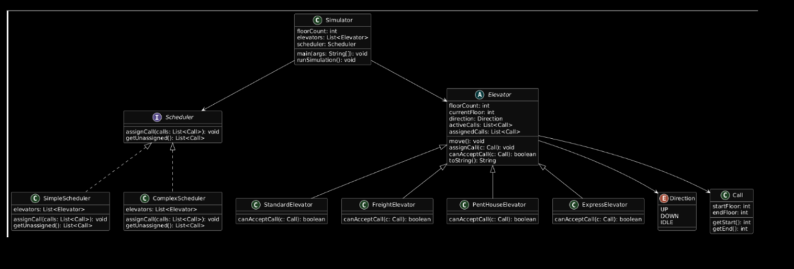

I am a Computer Science student at the University of San Diego Shiley-Marcos School of Engineering. My academic focus is on building a strong foundation in software engineering and systems programming.
Professionally, I am interested in computer architecture, clean code practices, and cybersecurity. I prioritize efficiency and simplicity in both my code and system configurations.
In my free time, I am an avid surfer and enjoy being outdoors in San Diego.
Birthday Paradox Simulation

This Java-based simulation explores the mathematical Birthday Paradox, which calculates the probability of shared birthdays within varying group sizes.
The application runs experimental trials for groups of 5 to 100 people, utilizing a random generator to simulate birthdays and calculate shared-date percentages over 20 trials per group.
Following clean code and TDD principles, I implemented modular classes for Simulation, Experiment, and Trial to maintain a clear separation of concerns and ensure mathematical accuracy.
Elevator System Simulator
{kind=link}

Final implementation UML diagram showing class inheritance and relationships. (Click to enlarge)
Project Overview
This project involves designing and implementing an elevator simulation system that models how different types of elevators operate within a building. The system includes multiple elevator types that share common behavior but follow different rules when accepting calls. The goal of the project is to apply object-oriented programming principles and design patterns to build a flexible and extensible system. A single abstract Elevator class defines shared state and behavior, while specific elevator types extend this class and override the canAcceptCall() method to implement their own policies. This project emphasizes key software engineering skills including abstraction, inheritance, polymorphism, and adherence to SOLID principles such as the Open-Closed Principle. The design allows new elevator types to be added without modifying existing code, and shared functionality is implemented once to avoid duplication. The scheduler interacts with all elevator types uniformly using polymorphism.
Functional Requirements
The simulator runs in discrete rounds. At the beginning of each round, the scheduler assigns at most one unassigned call to an elevator that can service it. Each elevator moves at most one floor per round toward completing its assigned calls. If an elevator reaches a floor where it must pick up or drop off a passenger, it must remain idle for one round. If an elevator changes direction, it must remain idle for one round before moving again. When an elevator has no active or assigned calls, it must return to the ground floor. If an elevator is empty and already on the ground floor, it remains idle until assigned a call. The simulation continues until all calls have been completed and all elevators have returned to floor 1. The program is controlled via command-line arguments specifying floor count, scheduler type, and the distribution of Standard, Freight, Penthouse, and Express elevators.
Technical Design and OOP Principles
I utilized an abstract Elevator class to define the general concept of an elevator without committing to a specific implementation. All elevator types inherit from this base class to share properties like current floor and direction while overriding the call acceptance logic to define unique behaviors. Each class encapsulates its own data, preventing raw values from being passed throughout the program. The scheduler interacts with elevators through references to the base Elevator type, enabling flexible behavior where each unit responds according to its own implementation. This architecture strictly follows the Open-Closed Principle, the Single Responsibility Principle, and the Dependency Inversion Principle, as the Simulator depends on the Scheduler interface rather than concrete implementations.
My Implementation Role
I was specifically responsible for implementing the Simulator engine and the Scheduler architecture, which included the core Scheduler interface, the SimpleScheduler, and the ComplexScheduler. A major focus of my work was engaging in the Test-Driven Development (TDD) process. I authored rigorous unit tests that provided high code coverage for both the Simulator and the Schedulers, ensuring that the proximity-based assignment logic functioned correctly across all edge cases. My role also involved managing the project structure through GitHub, utilizing branching and pull requests to maintain a clean codebase.
Assumptions and Key Takeaways
I made several strategic design decisions, such as using separate lists for assigned and active calls to track occupancy directly without adding extra state to the Call class. I also chose to store the total building floor count in the abstract Elevator class so all subclasses could access it for validation. Through this project, I learned how to manage complex state transitions in a discrete-time environment and significantly improved my ability to apply the Four Pillars of OOP to a real-world system. I gained experience in planning a project through UML and verified the reliability of my algorithms using a strict TDD workflow.
D.C. Draft Fantasy Simulator

Fantasy football inspired congressional stock trading simulator.

UML diagram showing the architecture and object-oriented design of the D.C. Draft fantasy simulation system.
Project Overview
D.C. Draft is a Java simulation modeled after a traditional fantasy football league, but instead of drafting NFL players, users draft members of the United States Congress. Rather than scoring points from football statistics, politicians score points based on the estimated performance of their disclosed stock trades.
Each user drafts a roster of politicians and competes against other teams throughout a simulated season. Weekly scores are generated using each politician’s trading activity, and the team with the strongest overall season record becomes champion.
Motivation
We decided to build this project because it combined multiple interesting areas into one application: fantasy sports systems, public congressional trading disclosures, and object-oriented software engineering. Congressional stock trading data is publicly available but difficult to analyze directly, so we wanted to create a system that transformed raw trade data into a competitive fantasy simulation that was both technically challenging and engaging to use.
Functional Requirements
The program runs through four major phases. First, the system loads congressional trading data from CSV files and builds a collection of Politician objects, each associated with a TradeHistory containing reported stock transactions.
Users then participate in a snake-style fantasy draft where the draft order reverses every round to ensure fairness. Politicians may only belong to one team, and drafting continues until every roster is complete.
Once drafting finishes, the season simulation begins. Every team plays weekly matchups against other teams. Politicians are scored using a ScoringStrategy implementation that estimates trading profit during a given period. Team scores are calculated by summing the scores of every politician on the roster.
Match winners update season standings, weekly MVPs are identified, and final standings determine the season champion.
Technical Design and OOP Principles
The system was designed around strong object-oriented programming principles and SOLID architecture. Each class has a clearly defined responsibility. Trade represents a single transaction, TradeHistory manages collections of trades, Politician combines identity and trading information, Team manages drafted politicians, Match evaluates weekly competition, and Season manages overall league progression.
Abstraction and polymorphism are primarily implemented through the ScoringStrategy interface. Team and Match classes do not need to understand how scoring calculations work internally. Instead, they depend only on the shared scoring contract. This allows additional scoring systems to be added later without modifying the core simulation engine.
Encapsulation is used heavily throughout the project. Internal data structures are protected through getters, defensive copying, and restricted access to mutable state. Static analysis tools including Checkstyle and SpotBugs were used to maintain code quality and enforce defensive programming practices.
The project was implemented entirely in Java using object-oriented design patterns, GitHub pull requests, unit testing, and collaborative branch workflows.
Design Assumptions
Several assumptions were necessary during development. Congressional disclosures often provide trade values as ranges rather than exact values, so midpoint estimates are used for initial profit calculations.
Trades are grouped into simulated weekly intervals so that matchup scoring remains consistent across the season. The project also focuses only on stock transactions instead of additional asset types such as crypto or options in order to simplify the scoring engine.
We specifically selected a snake draft format because it prevents a single team from maintaining a constant drafting advantage across every round.
My Implementation Role
My primary contributions included implementing and testing the Team class, weekly scoring functionality, matchup calculations, and portfolio profit strategy logic. I also worked extensively with GitHub collaboration workflows including branching, pull requests, merge conflict resolution, CI build validation, Checkstyle fixes, and SpotBugs debugging.
Through this project, I significantly improved my experience with object-oriented architecture, test-driven development, defensive programming, and maintaining scalable Java systems within a team environment.
Contact Me
ifalkenstrom@sandiego.edu